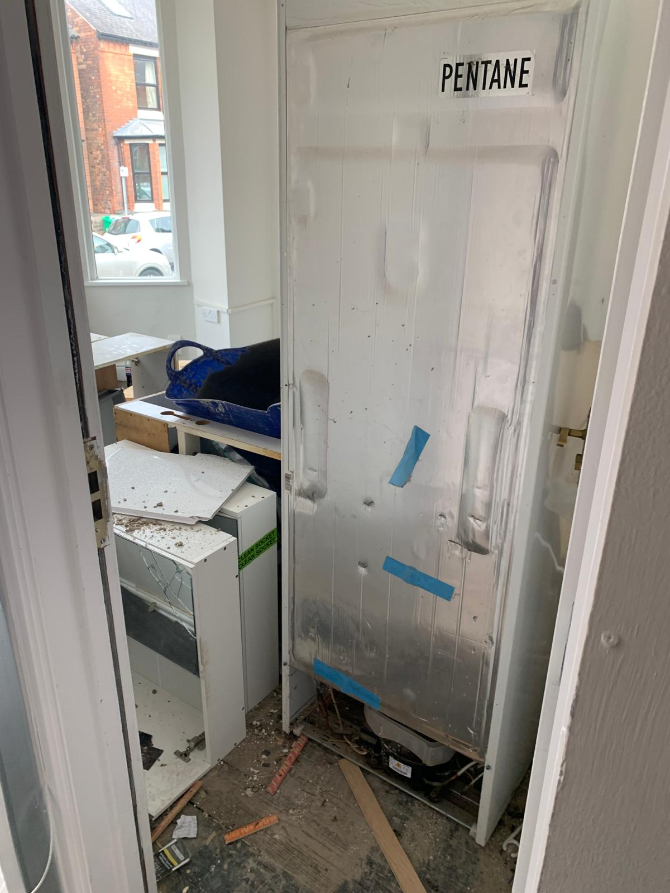
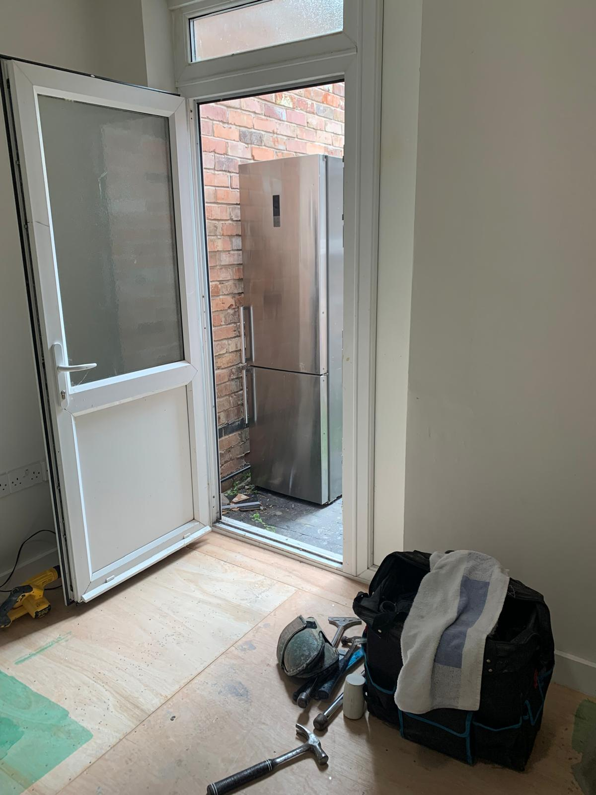
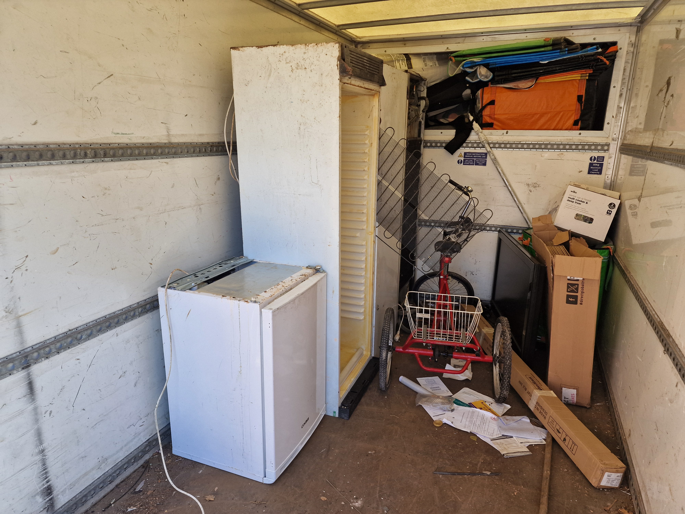

Got an old, broken fridge freezer taking up space in your kitchen, garage, or garden? One of the most common questions homeowners ask is: “Why does it cost money to collect and dispose of a fridge freezer?”
While scrap metal items like washing machines, tumble dryers, and cookers can often be collected cheaply or for scrap value, fridges and freezers are handled completely differently under UK environmental laws. Here is a clear breakdown of why collecting and disposing of a fridge freezer incurs a fee.
Fridges and freezers contain coolant gases (such as CFCs, HCFCs, or pentane) in their compressors and insulation foam. These substances are harmful to the ozone layer and are potent greenhouse gases if released improperly:

When a licensed waste carrier takes your old appliance to a commercial waste transfer station, they are charged a specific hazard disposal fee for every single unit:
At Donnelly’s Recycling, we hold a full Environment Agency waste carrier licence. We ensure every unit is taken to fully licensed disposal facilities across Nottingham, Mansfield, Sheffield, Derby, Newark, and surrounding areas.

Be extremely cautious if an unlicensed collector offers to pick up your fridge or freezer completely free of charge. Unlicensed collectors often strip the copper compressor from the back, puncture the cooling pipes (releasing toxic refrigerant gases into the air), and dump the remaining plastic and foam shell on rural roadsides or alleyways.
Under UK duty of care laws, if an unlicenced collector fly-tips your appliance and it is traced back to you, you can face severe council fines or legal action. Always verify that your waste carrier is fully licensed by the Environment Agency.

Whether you have a single under-counter fridge, a upright chest freezer, or a massive double American fridge freezer, we make disposal easy, fast, and completely hassle-free.
Send a photo of your fridge freezer via WhatsApp for an instant price.
Get Your Free QuoteAt Donnelly’s Recycling, we help homeowners, landlords, estate agents, and businesses remove unwanted appliances, bulky items, and general rubbish quickly and legally throughout Nottinghamshire and surrounding areas.
Our services include:
Fridges and freezers contain hazardous gases (CFCs/HCFCs) and POPs insulation foam, requiring specialized degassing and commercial disposal fees at licensed waste transfer stations.
Most reputable licensed collectors cannot take fridges for free because waste transfer sites charge specialized tipping fees to accept hazardous cooling equipment.
No. With professional waste clearance from Donnelly’s Recycling, all lifting, carrying, and loading from inside or outside your property is fully handled for you.
Yes. Donnelly’s Recycling regularly provides same-day and next-day appliance and waste clearance services across Nottingham and surrounding areas.